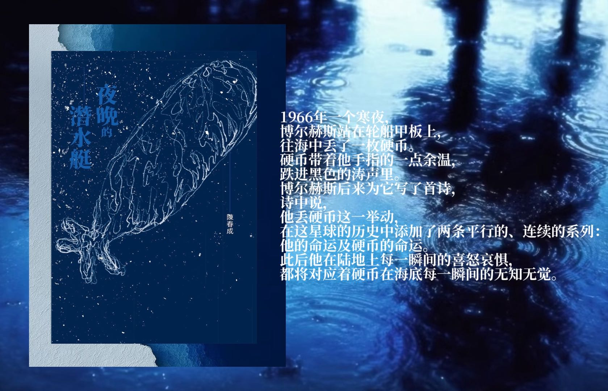
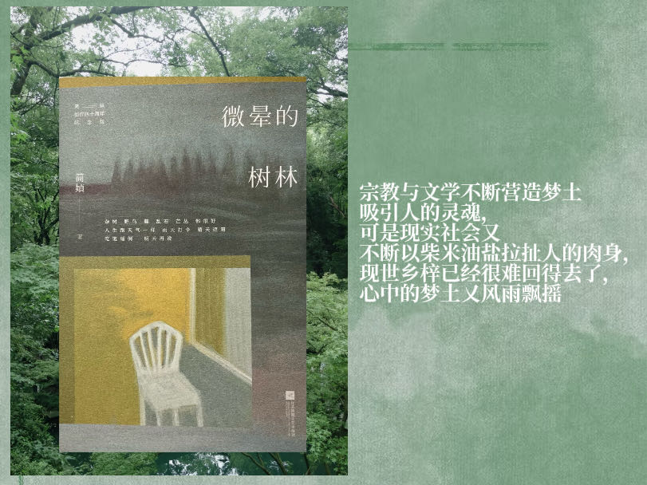
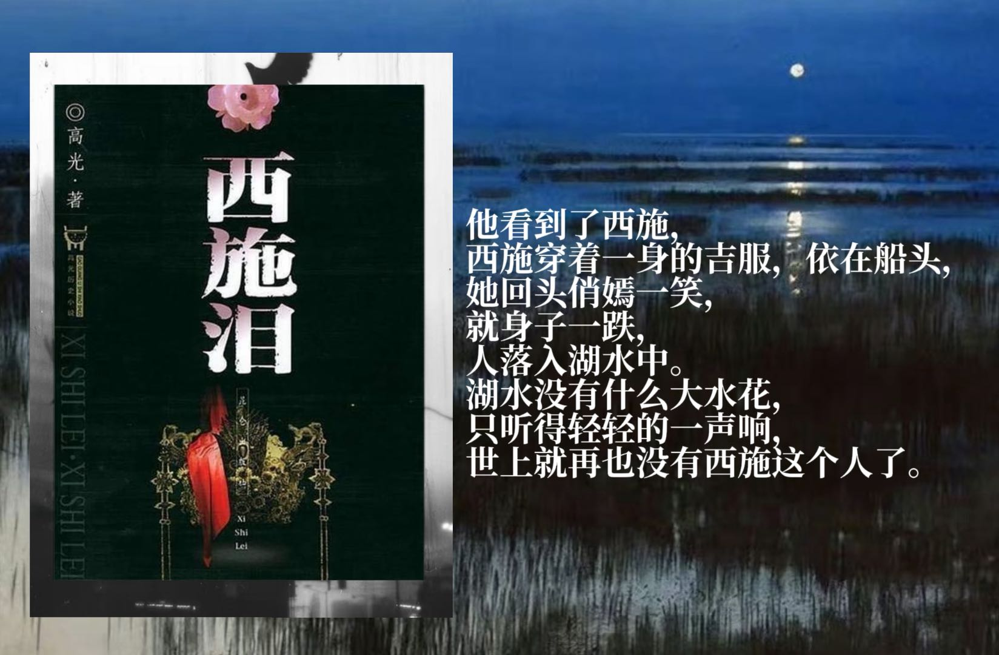

推荐去阅读的书

夜晚的潜水艇 陈春成
九个故事，笔锋游走于旧山河与未知宇宙间，以瑰奇飘扬的想象、温厚清幽的笔法，在现实与幻境间辟开若干条秘密的通道：海底漫游的少年、深山遗落的古碑、弥散入万物的字句、云彩修剪站、铸剑与酿酒、铁幕下的萨克斯、蓝鲸内的演奏厅……潜入故事深处，感知体内的星云旋动、草木蔓发；以词语的微光，探照记忆的海沟。关于藏匿与寻找、追捕与逃遁，种种无常中的一点确凿，烈日与深渊间的一小片清凉。陈春成的小说世界，是可供藏身的洞窟，悬浮于纸上的宫殿，航向往昔的潜艇，呈现汉语小说的一种风度与新的可能性。

微晕的树林 简媜
简媜说在《微晕的树林》里，“或爬梳寻常事理、提炼生活滋味，或怀想乡园旧情，或闲话旅行、阅读之所见所思，或变奏为小说化寓言，或归返自身记述成长、创作、梦境之体会与感悟……”这是一部简媜记录自己寻常生活、怀乡、旅行、阅读经历和体验，构思精巧的散文集。

西施泪
中的主人公西施是一个美人，一个绝色美人，一个千古美人。生在杀人夺国时代的西施，虽然倾心寻找真理，寻找爱情，但她没有认识到她生存的这个世界，真理没有了，爱情也没有了，只有强权，保有残暴和欺骗。最早她是被范蠡用爱情婚姻做砝码，骗到吴王夫差身边，让夫差在玩弄国家的同时也把她玩于股掌之中。夫差教出了一个冰冷的西施，一个从人向兽转变的西施。越王勾践灭了夫差，露出十足的兽性，西施又被勾践拥入怀抱，让她与兽同行。勾践灭亡，西施终于发现不仅她深爱着的范蠡，不仅夫差和勾践，而且连世上与她最近的最后一个人小洗也也在欺骗她，这时她就不惜从容一死了。